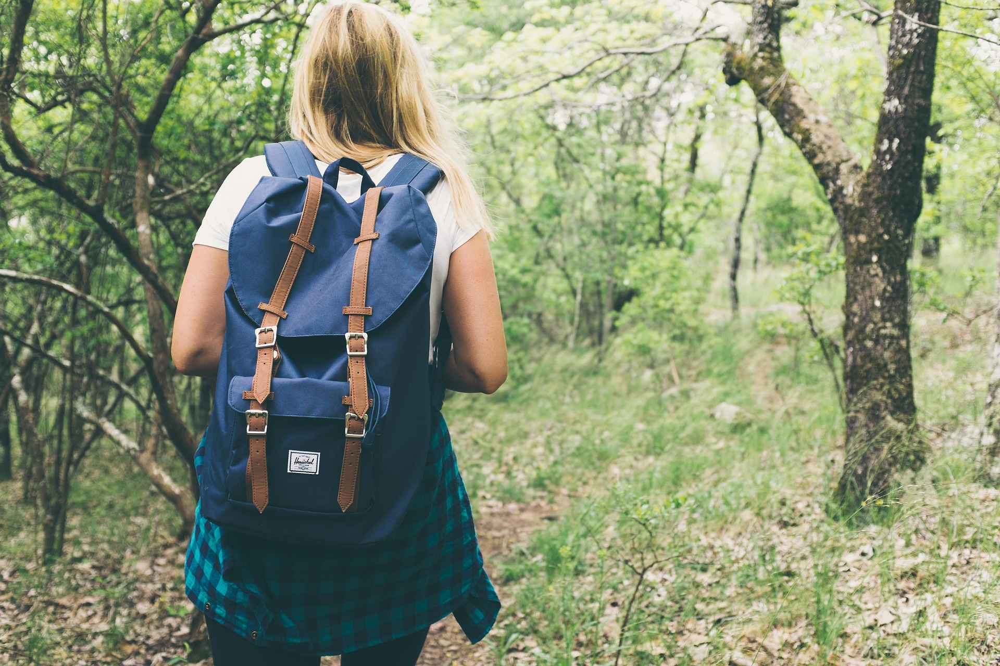
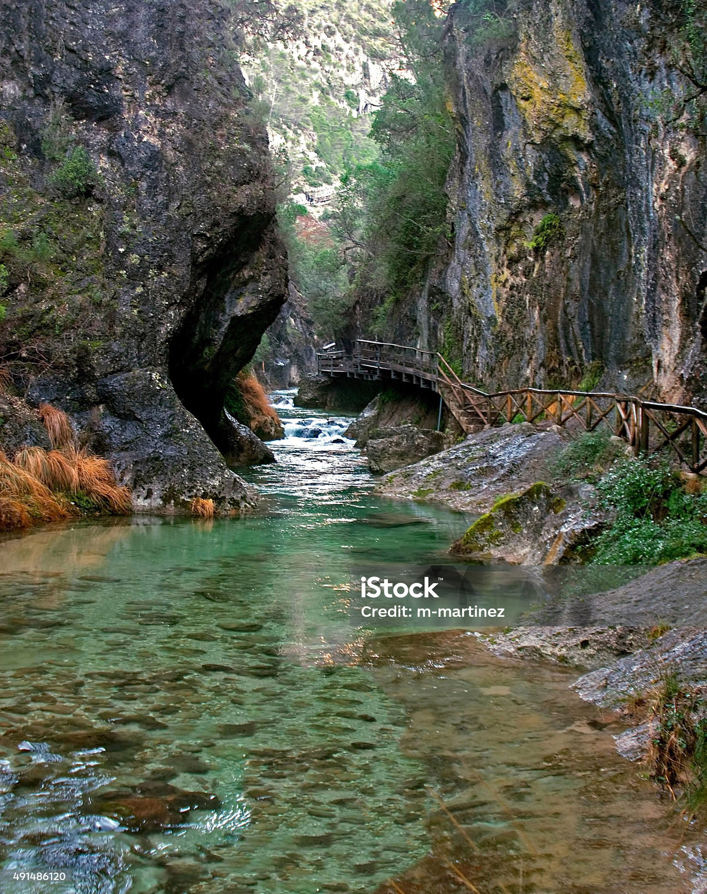

Antes de salir
Prepara lo básico para tu caminata.
Elige un recorrido acorde con tu experiencia.
- Lleva agua.
- Usa zapatos cómodos.
- Revisa el clima.
Galería de paisajes
Haz clic en una de las dos primeras fotos para verla en tamaño completo.


Tipos de recorrido
Ejemplos para comparar tres tipos de caminata.
| Recorrido | Terreno | Esfuerzo orientativo |
|---|---|---|
| Paseo junto a una laguna | Generalmente plano | Bajo |
| Sendero de bosque | Tierra con desniveles | Medio |
| Subida a un mirador | Pendiente | Medio a alto |
Contacto
Formulario de demostración. Usa datos de ejemplo.
Qué llevar en la mochila
Para una salida corta, prepara agua, algo de comer y protección solar.
Organiza la mochila de modo que puedas sacar el agua y la chaqueta con facilidad.

